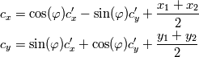
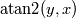
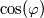

Elliptical arcs¶
Parameters¶
SVG defines an elliptical arc with the following parameters:
- - The starting point of the arc, taken from the end point of the previous segment.
- - The semimajor (x) radius.
- - The semiminor (y) radius.
- - The rotation of the x-axis of the ellipse from the x-axis of the image.
- - The large arc flag. If it is set to 0, an arc spanning 180 degrees or less is chosen. If it is 1, the arc is greater than 180 degrees.
 - The sweep flag. If it is set to 0, the arc sweeps through
decreasing angles. If it is 1, the arc sweeps through increasing angles.
- The sweep flag. If it is set to 0, the arc sweeps through
decreasing angles. If it is 1, the arc sweeps through increasing angles.- - The end point of the arc.
Centre point¶
The centre point is calculated in three steps. Firstly, the midpoint of the line joining the start and end points is calculated:
An intermediate value of the centre points are then calculated with the equations
where the + sign is chosen if the two flags are different () and the - sign is chosen if the flags are the same (). Finally, the centre point is calculated:

Starting and sweep angles¶
The angle between two vectors and is given by
The  function is provided by most math libraries. It
returns the arctangent of  , using the signs of the inputs to
get the correct quadrant for the angle. See the Python math library
documentation
for further information on .
, using the signs of the inputs to
get the correct quadrant for the angle. See the Python math library
documentation
for further information on .
The starting angle of the arc is calculated as follows:

The angle that the arc sweeps over is calculated as:
is adjusted by adding or subtracting 360 degrees as necessary to meet the conditions
Extrema¶
The point at an angle from the centre is given by the equations
(1)
To find the angles at which any extrema are located, we differentiate these functions and solve for when the derivative is zero. Remembering that and hence  and are constants, the derivatives of these functions are:
Setting these to zero and solving for gives the angles at which extrema occur as
Due to the periodic nature of the trigonometric functions, these will give multiple solutions. We restrict the values to those that are swept by the arc, and then find the values of the extrema by evaluating (1) at these locations. Along with the start and end points of the arc, these extrema are then used to generate the bounding box of the arc.
External links¶
Last update:
Oct 10, 2010